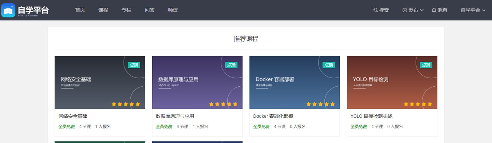
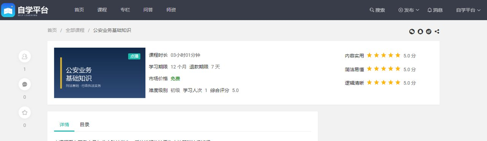
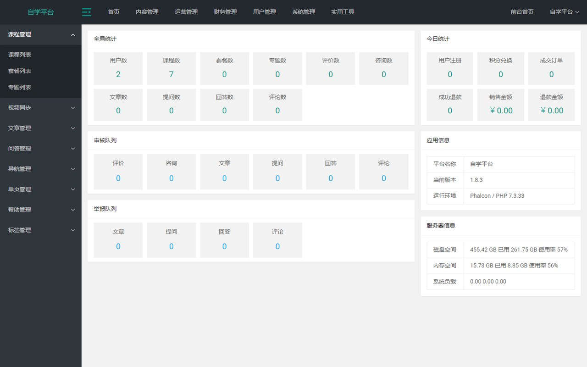
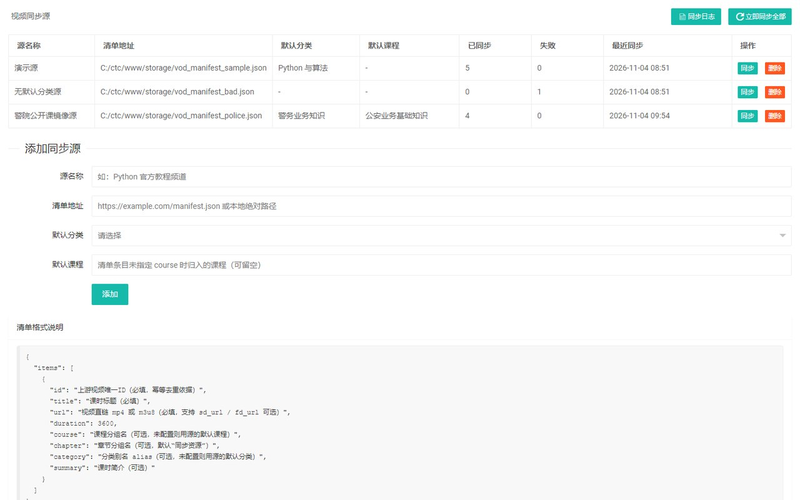

以 CTC 1.8.3（GPL-2.0）为底座，保留课程、章节、点播与后台体系， 重做品牌标识，移除会员与登录门槛，补齐学习笔记、章节收藏、成长值三条学习主线， 并新增片源同步与演示数据工具链。
dist/。
相对上游 master 快照：新增 37 项、删除 34 项、修改 117 项。
新增 App\Library\Branding 作为站点名称、标语、Logo 的唯一读取入口，配置收敛到 brand.*；
配套迁移改写库中历史品牌数据，模板与控制器里不再出现品牌字面量。
下线 VIP 的模型、仓储、缓存、控制器与视图，课程不再区分会员/非会员， 计费与权益相关的定时任务一并删除。
移除账户、第三方登录与后台会话控制，改为访客模式：学习行为按会话记录， 前台不再有注册/登录断点。
新增学习笔记、章节收藏与成长值三件套（模型/仓储/服务/校验/视图齐全）， 成长事件通过 outbox 表落库异步结算，个人中心可见进度与累计时长。
后台新增"视频同步源"：登记 manifest 清单地址，一键同步/补偿， 每条同步留失败原因与时间戳，支持按分类或课程归位。
tools/ 下四个脚本：造课、造学习记录、绑定片源、回填观看进度，
让一台干净机器十分钟内具备可演示的内容。
本地实例（PHP 内置服务器 + MySQL + Redis）实拍，1440 宽桌面视口。




不含 vendor 与演示视频。
逐条比对运行时约束，六项硬性不满足。
| 维度 | 本项目要求 | Vercel Serverless | 结论 |
|---|---|---|---|
| PHP 版本 | PHP 7.3（Phalcon 3.4 只支持到 7.3） | 社区 runtime 支持 7.4–8.5，无 7.3 | 不满足 |
| Phalcon 扩展 | ext-phalcon 3.4（C 扩展） | 镜像内不含，构建期无法注入 | 不满足 |
| 数据库 | MySQL 5.7 长连接 + 30 个迁移 | 无内置数据库 | 不满足 |
| 缓存与会话 | Redis 5 | 无内置 Redis | 不满足 |
| 文件系统 | storage 可写（Volt 编译、上传、日志） | 只读，仅 /tmp 且冷启动丢失 | 不满足 |
| 常驻进程 | GatewayWorker 8282 + 定时调度器 | 仅请求触发的无状态函数 | 不满足 |
可行的替代：云服务器（Nginx + php7.3-fpm + phalcon + MySQL + Redis）或支持容器的托管平台； 安装包内已附运行环境清单、迁移步骤与 Nginx 重写配置。